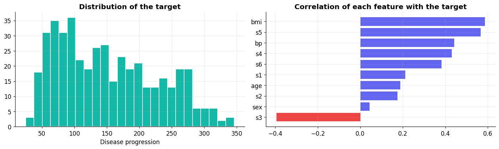
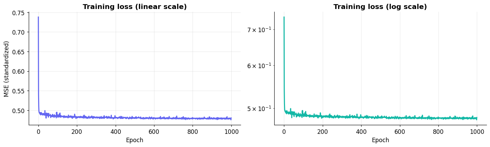
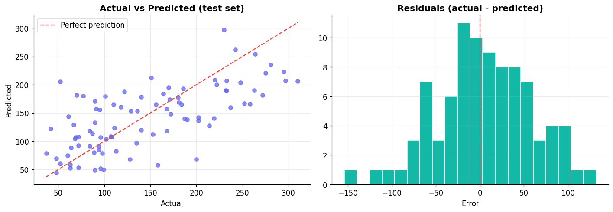

Name: Edrian C. Jugan
Task 4: Linear Regression in PyTorch#
📌 Problem Statement#
Instruction: Train a linear regression model in PyTorch using a regression dataset. Use the following parameters.
Requirement |
Setting used |
|---|---|
Criterion |
|
Fully connected layers |
2 × |
Batch size |
8 |
Optimizer |
|
Epochs |
1000 |
Dataset: the Diabetes dataset from scikit-learn (442 patients, 10 features such as age, BMI and blood pressure). The target is a number that measures disease progression one year after baseline, so this is a regression problem. It ships with scikit-learn, so no download is needed.
import numpy as np
import pandas as pd
import torch
import torch.nn as nn
from torch.utils.data import TensorDataset, DataLoader
from sklearn.datasets import load_diabetes
from sklearn.model_selection import train_test_split
from sklearn.preprocessing import StandardScaler
from sklearn.linear_model import LinearRegression
from sklearn.metrics import mean_squared_error, r2_score
import matplotlib.pyplot as plt
# consistent look for every plot in this notebook
plt.rcParams.update({
"figure.dpi": 110, "axes.grid": True, "grid.alpha": 0.25,
"axes.spines.top": False, "axes.spines.right": False,
"axes.titleweight": "bold", "font.size": 11,
})
TEAL, INDIGO, RED, ORANGE, GREY = "#14b8a6", "#6366f1", "#ef4444", "#f97316", "#94a3b8"
device = torch.device("cuda:0" if torch.cuda.is_available() else "cpu")
print("Device:", device)
Device: cpu
def set_seed(seed):
np.random.seed(seed)
torch.manual_seed(seed)
set_seed(42) # so the results can be reproduced
1️⃣ Load and explore the dataset#
data = load_diabetes()
X = data.data # (442, 10)
y = data.target.reshape(-1, 1) # (442, 1)
df = pd.DataFrame(X, columns=data.feature_names)
df["target"] = y
print(f"Samples: {X.shape[0]} | Features: {X.shape[1]} | Target range: {y.min():.0f} to {y.max():.0f}")
df.head()
Samples: 442 | Features: 10 | Target range: 25 to 346
| age | sex | bmi | bp | s1 | s2 | s3 | s4 | s5 | s6 | target | |
|---|---|---|---|---|---|---|---|---|---|---|---|
| 0 | 0.038076 | 0.050680 | 0.061696 | 0.021872 | -0.044223 | -0.034821 | -0.043401 | -0.002592 | 0.019907 | -0.017646 | 151.0 |
| 1 | -0.001882 | -0.044642 | -0.051474 | -0.026328 | -0.008449 | -0.019163 | 0.074412 | -0.039493 | -0.068332 | -0.092204 | 75.0 |
| 2 | 0.085299 | 0.050680 | 0.044451 | -0.005670 | -0.045599 | -0.034194 | -0.032356 | -0.002592 | 0.002861 | -0.025930 | 141.0 |
| 3 | -0.089063 | -0.044642 | -0.011595 | -0.036656 | 0.012191 | 0.024991 | -0.036038 | 0.034309 | 0.022688 | -0.009362 | 206.0 |
| 4 | 0.005383 | -0.044642 | -0.036385 | 0.021872 | 0.003935 | 0.015596 | 0.008142 | -0.002592 | -0.031988 | -0.046641 | 135.0 |
fig, axes = plt.subplots(1, 2, figsize=(13, 4))
axes[0].hist(y, bins=25, color=TEAL, edgecolor="white")
axes[0].set_title("Distribution of the target"); axes[0].set_xlabel("Disease progression")
corr = df.corr()["target"].drop("target").sort_values()
axes[1].barh(corr.index, corr.values, color=[RED if v < 0 else INDIGO for v in corr.values])
axes[1].set_title("Correlation of each feature with the target")
plt.tight_layout()
plt.show()

2️⃣ Prepare the data (input and target)#
Split: 80% training / 20% testing.
Standardize the inputs and the target using only the training statistics. SGD trains much more smoothly when everything is on a similar scale.
Convert everything to
float32tensors.
X_train, X_test, y_train, y_test = train_test_split(X, y, test_size=0.2, random_state=42)
x_scaler, y_scaler = StandardScaler(), StandardScaler()
X_train_s = x_scaler.fit_transform(X_train)
X_test_s = x_scaler.transform(X_test)
y_train_s = y_scaler.fit_transform(y_train)
inputs = torch.tensor(X_train_s, dtype=torch.float32)
targets = torch.tensor(y_train_s, dtype=torch.float32)
X_test_t = torch.tensor(X_test_s, dtype=torch.float32)
print("Train inputs :", inputs.shape, "| Train targets:", targets.shape)
print("Test inputs :", X_test_t.shape)
Train inputs : torch.Size([353, 10]) | Train targets: torch.Size([353, 1])
Test inputs : torch.Size([89, 10])
3️⃣ Dataset and DataLoader (batch size = 8)#
train_ds = TensorDataset(inputs, targets)
batch_size = 8
train_dl = DataLoader(train_ds, batch_size=batch_size, shuffle=True)
xb, yb = next(iter(train_dl))
print("One batch ->", xb.shape, yb.shape)
print("Batches per epoch:", len(train_dl))
One batch -> torch.Size([8, 10]) torch.Size([8, 1])
Batches per epoch: 45
4️⃣ Define the model: 2 fully connected layers#
There is no activation function between the two layers, so the whole model is still a linear regression (two stacked linear layers make another linear function). To make it non-linear you can put an nn.ReLU() between them.
class LinearRegressionModel(nn.Module):
def __init__(self, in_features=10, hidden=16, out_features=1):
super().__init__()
self.fc1 = nn.Linear(in_features, hidden) # fully connected layer 1
self.fc2 = nn.Linear(hidden, out_features) # fully connected layer 2
def forward(self, x):
x = self.fc1(x)
x = self.fc2(x)
return x
model = LinearRegressionModel().to(device)
print(model)
print("\nTrainable parameters:", sum(p.numel() for p in model.parameters() if p.requires_grad))
LinearRegressionModel(
(fc1): Linear(in_features=10, out_features=16, bias=True)
(fc2): Linear(in_features=16, out_features=1, bias=True)
)
Trainable parameters: 193
5️⃣ Loss function (MSE) and optimizer (SGD)#
criterion = nn.MSELoss()
opt = torch.optim.SGD(model.parameters(), lr=0.01)
6️⃣ Train for 1000 epochs#
Every step of every batch does the same four things:
Predict with the model
Calculate the loss (MSE)
Calculate the gradients with
loss.backward()Update the parameters with
opt.step()
def fit(num_epochs, model, loss_fn, opt, train_dl):
history = []
for epoch in range(num_epochs):
model.train()
running_loss = 0.0
for xb, yb in train_dl:
xb, yb = xb.to(device), yb.to(device)
pred = model(xb) # 1. predict
loss = loss_fn(pred, yb) # 2. calculate loss
opt.zero_grad() # 3. calculate gradients
loss.backward()
opt.step() # 4. update parameters
running_loss += loss.item() * xb.size(0)
epoch_loss = running_loss / len(train_dl.dataset)
history.append(epoch_loss)
if epoch == 0 or (epoch + 1) % 100 == 0:
print(f"Epoch [{epoch + 1:>4}/{num_epochs}] Loss: {epoch_loss:.4f}")
return history
history = fit(1000, model, criterion, opt, train_dl)
Epoch [ 1/1000] Loss: 0.7381
Epoch [ 100/1000] Loss: 0.4887
Epoch [ 200/1000] Loss: 0.4826
Epoch [ 300/1000] Loss: 0.4812
Epoch [ 400/1000] Loss: 0.4802
Epoch [ 500/1000] Loss: 0.4803
Epoch [ 600/1000] Loss: 0.4810
Epoch [ 700/1000] Loss: 0.4784
Epoch [ 800/1000] Loss: 0.4816
Epoch [ 900/1000] Loss: 0.4802
Epoch [1000/1000] Loss: 0.4806
📉 Training curve#
fig, axes = plt.subplots(1, 2, figsize=(13, 4))
axes[0].plot(history, color=INDIGO, lw=2)
axes[0].set_title("Training loss (linear scale)")
axes[0].set_xlabel("Epoch"); axes[0].set_ylabel("MSE (standardized)")
axes[1].plot(history, color=TEAL, lw=2)
axes[1].set_yscale("log")
axes[1].set_title("Training loss (log scale)")
axes[1].set_xlabel("Epoch")
plt.tight_layout()
plt.show()

🧪 Evaluate on the test set#
The model predicts on the standardized scale, so we convert the predictions back to the original units before computing the metrics.
model.eval()
with torch.no_grad():
preds_s = model(X_test_t.to(device)).cpu().numpy()
preds = y_scaler.inverse_transform(preds_s)
mse = mean_squared_error(y_test, preds)
rmse = np.sqrt(mse)
r2 = r2_score(y_test, preds)
print(f"Test MSE : {mse:.2f}")
print(f"Test RMSE : {rmse:.2f}")
print(f"Test R^2 : {r2:.4f}")
Test MSE : 2942.25
Test RMSE : 54.24
Test R^2 : 0.4447
fig, axes = plt.subplots(1, 2, figsize=(13, 4.6))
# actual vs predicted
axes[0].scatter(y_test, preds, alpha=0.75, color=INDIGO)
lims = [min(y_test.min(), preds.min()), max(y_test.max(), preds.max())]
axes[0].plot(lims, lims, "--", color=RED, label="Perfect prediction")
axes[0].set_xlabel("Actual"); axes[0].set_ylabel("Predicted")
axes[0].set_title("Actual vs Predicted (test set)"); axes[0].legend()
# residuals
residuals = (y_test - preds).ravel()
axes[1].hist(residuals, bins=20, color=TEAL, edgecolor="white")
axes[1].axvline(0, color=RED, ls="--")
axes[1].set_title("Residuals (actual - predicted)"); axes[1].set_xlabel("Error")
plt.tight_layout()
plt.show()

🔍 Sanity check against scikit-learn#
Since our model is linear, it should land close to the closed-form least squares solution.
sk = LinearRegression().fit(X_train_s, y_train_s)
sk_preds = y_scaler.inverse_transform(sk.predict(X_test_s))
results = pd.DataFrame({
"Model": ["PyTorch (2 FC layers, SGD)", "scikit-learn LinearRegression"],
"Test MSE": [mse, mean_squared_error(y_test, sk_preds)],
"Test RMSE": [rmse, np.sqrt(mean_squared_error(y_test, sk_preds))],
"Test R^2": [r2, r2_score(y_test, sk_preds)],
}).round(4)
results
| Model | Test MSE | Test RMSE | Test R^2 | |
|---|---|---|---|---|
| 0 | PyTorch (2 FC layers, SGD) | 2942.2495 | 54.2425 | 0.4447 |
| 1 | scikit-learn LinearRegression | 2900.1936 | 53.8534 | 0.4526 |